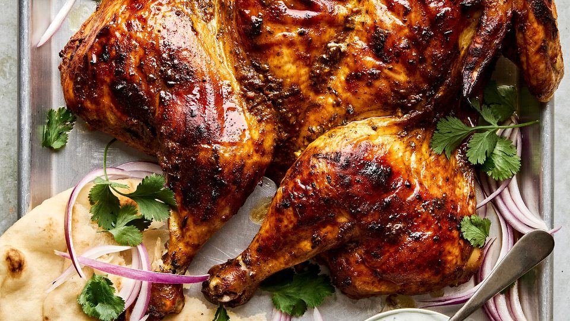

🍗Simple Roast Chicken with Garlic and Lemon
This roast chicken is crispy on the outside, juicy on the
inside, and infused with aromatic garlic and lemon.
You can serve it with roasted vegetables or mashed potatoes
for a complete meal.
Ingredients
- 1 whole chicken (about 4-6 lbs)
- 4 tbsp unsalted butter
- 4 garlic cloves, sliced
- 3 sprigs fresh rosemary
- 1 lemon, halved
- Salt and pepper
- Kitchen twine (optional)
Instructions
- Preheat oven to 450°F (230°C). Place a rack in the center.
- Prep the chicken: Remove giblets, trim excess fat, rinse and dry thoroughly.
- Make garlic butter: Melt butter in a saucepan, then add garlic and rosemary. Let sit for 5 minutes.
- Stuff the cavity: Place garlic slices, rosemary, and lemon halves inside the chicken.
- Season: Brush melted butter all over the chicken. Generously season with salt and pepper, including inside the cavity.
- Tie the legs: Use kitchen twine to tie the legs together for even cooking.
- Roast: Place chicken in a roasting pan. Roast for 1 hour, basting every 15 minutes with pan juices. Rotate the pan each time for even browning.
- Check doneness: Internal temperature should reach 165°F (74°C) in the breast (avoid touching bone).
- Rest and serve: Let the chicken rest for 10 minutes before slicing.
Nutrition
| Calories: 190 kcal |
Total Fat: 11 g |
| Cholesterol: 65 mg |
Dietary Fiber: 0 g |
| Sodium: 62 mg |
Total Carbohydrate: 0 g |
| Protein: 20 g |
Calcium: 10 mg |
| Iron: 1.1 mg |
Potassium: 179 mg |